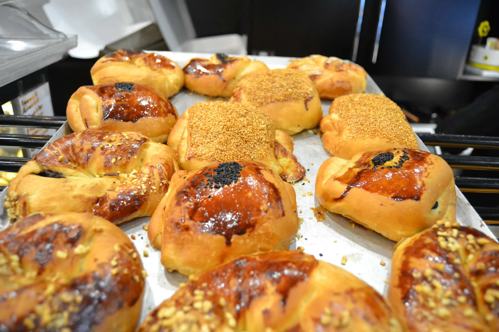

Ürünlerimiz kendi imalatımızdır; %100 el yapımı, doğal içerikli ve günlük üretimdir.

Çankaya’da tek adres
Melis Pasta & Bistro Çankaya’da, Güvenlik Caddesi’ndedir; başka yerde şubesi yoktur. Ürünlerin hepsi kendi imalatıdır: %100 el yapımı, doğal içerikli ve günlük üretim.
Pastanede yaş pastalar, özel gün pastaları, sütlü tatlılar, ekler ve petifürler, şerbetli tatlılar, mayalılar, kuru pasta ve kekler ile çikolatalar var; bistroda güne başlarken tabaklarından burgere, tosttan makarnaya kadar geniş bir menü. Çalışma saatleri hafta içi ve hafta sonu 06:00–00:00.
- 1999
- yılından beri
- 1
- şube, başka yerde şubemiz yok
- 06:00
- her gün açılış, kapanış 00:00